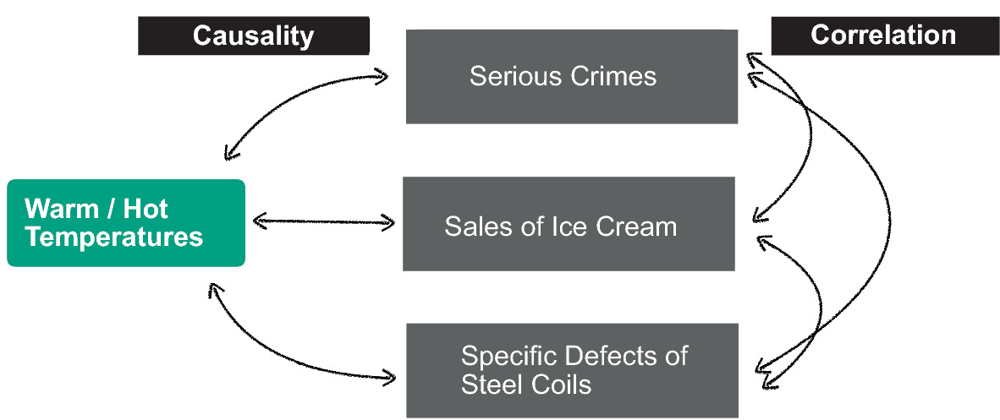
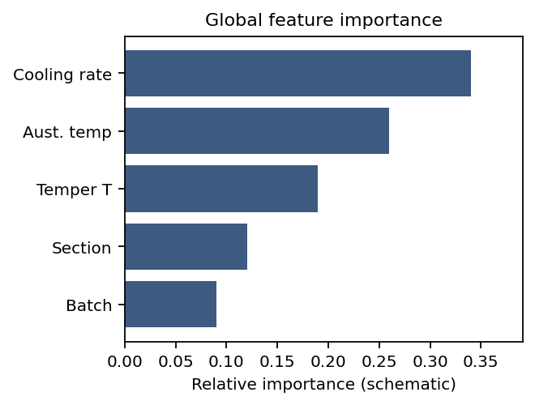

flowchart TD
%% Styling
classDef default fill:#1e293b,stroke:#94a3b8,stroke-width:2px,color:#ffffff,rx:8px,ry:8px;
classDef primary fill:#713f12,stroke:#facc15,stroke-width:2px,color:#ffffff,rx:12px,ry:12px,font-weight:bold;
classDef secondary fill:#064e3b,stroke:#4ade80,stroke-width:2px,color:#ffffff,rx:8px,ry:8px,font-weight:bold;
P["<span style='font-size:24px;'>Processing</span>"]:::secondary -->|<span style='font-size:16px;'>Physics-Informed</span>| S["<span style='font-size:24px;'>Structure</span>"]:::primary
S -->|<span style='font-size:16px;'>Vision ML</span>| Pr["<span style='font-size:24px;'>Property</span>"]:::primary
Pr -->|<span style='font-size:16px;'>Surrogates</span>| Pe["<span style='font-size:24px;'>Performance</span>"]:::primary
Pe -->|<span style='font-size:16px;'>Inverse Design</span>| P
Machine Learning in Materials Processing & Characterization
Unit 1: What Makes Materials Data Special?


Historical Roots of Data (I)
The First Data and Metadata
- 3400 BCE: Sumerian cuneiform tablets for counting sheep and grain
- Not just numbers — symbols represented context: units, objects, locations
- The first metadata: data about data Sandfeld, Stefan et al., (2024)

One of the first data visualization: summary account of silver for the governor written in Sumerian Cuneiform on a clay tablet. (From Shuruppak or Abu Salabikh, Iraq, circa 2,500 BCE. British Museum, London. BM 15826, courtesy Gavin Collins [10])
Kepler: The First Data Analyst
- 1609: Kepler inherited 25 years of Mars observations from Tycho Brahe
- He didn’t invent a new telescope — he invented a data-driven explanation
- Transition from descriptive (circles) to explanatory (ellipses)

The lesson: More data alone is not enough. You need the right model.


The Ashby Map/Material Property Charts: Feature Engineering Before ML
- Michael Ashby (1992): Plotting material properties against each other
- Guided by both the engineering knowledge and intuition chose the most important pairs of properties, e.g., Young’s modulus vs. density or strength vs. density
- Feature engineering without explicit ML

Note
Domain knowledge tells you which features to plot. ML automates finding patterns in high-dimensional versions of this idea.
Materials example 1: process→property regression
Example: steel quench & temper (DIN 1.7709 / 21CrMoV5-7).
- Inputs: austenitizing temperature/time, quench medium, tempering temperature/time (here: fixed austenitize at 960 °C, oil quench, 2 h temper) Mantzoukas, John et al., (2021), doi:10.1051/matecconf/202134902005.
- Target: hardness (HRC/HV) or tensile properties (continuous).
- Risks: true cooling rate vs nominal quench, furnace load/position, prior microstructure, section size—easy to miss in the spreadsheet but they move the outcome.

Materials example 3: spectra interpretation task framing
Example: Raman spectra → TiO\(_2\) polymorph class (anatase vs rutile). Bhattacharya, Abhiroop et al., (2022), doi:10.1038/s41598-022-26343-3
- Inputs: spectral signal (possibly multimodal context).
- Targets: composition class, phase indicator, or property proxy.
- Risks: baseline drift, preprocessing leakage, calibration instability.

The Multi-Scale Challenge
- Materials span 10 orders of magnitude: atoms (Å) to components (m)
- Each scale has its own data type:
- Atomic: DFT energies, electron microscopy
- Micro: Micrographs, EBSD maps
- Meso: Process logs, mechanical tests
- Macro: Component performance, field data

Note
ML challenge: How do you connect information across scales?
The Multi-Modal Challenge
- A single sample produces many data types:
- Images: SEM, TEM, optical micrographs (2D/3D)
- Spectra: XRD, EELS, EDS (1D/4D)
- Time series: Temperature logs, force curves
- Scalars: Hardness, conductivity, composition
Fusion problem: How do you combine a micrograph with a spectrum with a process log into one model?
Model-driven fusion in STEM: joint recovery of elemental maps by linking high-SNR elastic (HAADF) structure with spectroscopic (EDX/EELS) signals—often at much lower dose than chemistry-only mapping Schwartz, Jonathan et al., (2022), doi:10.1038/s41524-021-00692-5.

The Curse of Dimensionality (I)
Thought experiment: You have 3 process parameters, each with 10 possible values.
- Full grid search: \(10^3 = 1{,}000\) experiments
- But if you have 10 parameters: \(10^{10} = 10{,}000{,}000{,}000\) experiments!
Even with 35 experiments, you’ve explored only \(\frac{35}{10^3} = 3.5\%\) of a 3-parameter space.
The Curse of Dimensionality (II)
- In high-dimensional space, data is sparse by default
- All points are approximately equidistant from each other
- Nearest-neighbor methods break down
- Materials data lies on a low-dimensional manifold — finding it is key

Correlation vs. Causality (I)
The “Ice Cream” Trap


- Observation: Ice cream sales and crime rates both increase in summer
- Spurious correlation: Ice cream does not cause crime
- Confounding variable: Heat (temperature) drives both
Scientific Trust and Explainability
- Peers will ask: “Why does your model make this prediction?”
- A black-box answer (“the neural network said so”) is not acceptable
- Explainability methods: SHAP values, attention maps, feature importance
SHAP (local attributions) — how much each feature pushes this prediction up or down.

Attention / activation maps — where the network looks in an input (image, sequence, spectrum grid).

Feature importance — global ranking of inputs (tree splits, permutation Δ, coefficients).
